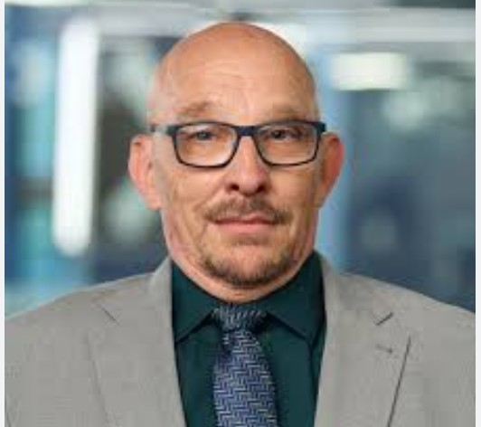
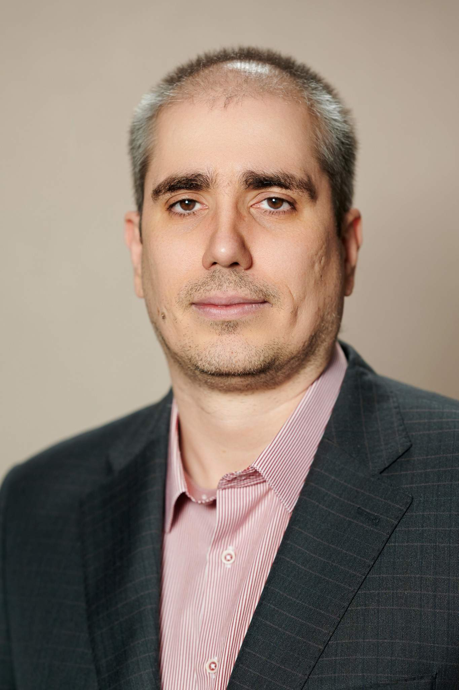
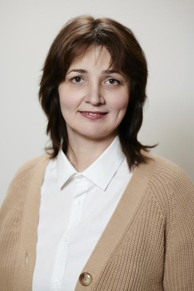

Team

Dr Mark Thomas
LEAR, Coordinator, Trainer
Dr Mark Thomas is an Assistant Professor in the Department of Political Science at La Salle University (Philadelphia, PA) (2016 – present) and Acting Chair of the Department of Economics and Political Science as well as a LEAR at La Salle University. He holds a PhD in Political Science (University of Notre Dame), an MBA in International Management, and an MA in International Affairs.
In the project “Viewing the EU Socioeconomic Terrain for American Graduate Education”, as a coordinator and a trainer he delivers sessions: “A Historical and Contemporary Analysis of the EU Security” and “EU Membership Aspirations and Strategic Partnerships”.
His academic and research profile includes publications on information operations, hybrid warfare, far-right movements in Europe, NATO transformation, Ukrainian national identity, and cyber defense policy. He has presented papers on information operations and cyber defense policy at the international conference “Challenges and Reality of the IT-space: Software Engineering and Cyber Security”.
Intizorhon Fataeva
Trainer
Intizorhon Fataeva is the Founder of Imona Education (Uzbekistan) (August 2024 – present). She holds a Bachelor of Arts from La Salle University (May 2024), majoring in Criminal Justice and Political Science, with a minor in Sociology.
In the project ““Viewing the EU Socioeconomic Terrain for American Graduate Education”, as a trainer she delivers Session “Empowering Young Women through EU Educational and Community Initiatives”.
Her relevant experience includes work with Girls Inc. (Philadelphia) as an intern (August 2023 – December 2023), the Philadelphia District Attorney’s Office (Family Violence & Sexual Assault Unit) as an intern (June 2023 – August 2023), and La Salle University School of Arts & Sciences as a Teaching Assistant/Research Assistant (August 2023 – May 2024). She has provided translation support in Tajik and Russian and speaks English, Tajik, Russian, and Uzbek.

Prof. Dr. Volodymyr Tokar
Trainer
Prof. Dr. Volodymyr Tokar is a Ukrainian Doctor of Economic Sciences (Doctor Habilitated) and Professor at the Department of Software Engineering and Cybersecurity of the State University of Trade and Economics (SUTE; Kyiv, Ukraine).
In the project “Viewing the EU Socioeconomic Terrain for American Graduate Education”, as a trainer he delivers sessions on building EU economic security frameworks, female empowerment and gender equality in EU socioeconomic policy, and cybersecurity and technological innovation in the EU.
Prof. Dr. Tokar’s project experience includes Jean Monnet and Erasmus+ initiatives at SUTE: “EU Economic Security” (Chair Holder, 2022–2025), “EU Gender Security” (Module leader, 2022–2025), “European Female Empowerment for The Union of Equality” (Coordinator, 2022–2025), “EU Economic Resilience Policy” (Trainer, 2022–2025), and EU MIGRATION POLICY WITHIN HYBRID THREATS (Coordinator, 2022–2025). He was also a trainer in “Coming Home: Educational Development and Opportunities for Veteran Women” (U.S. Embassy Public Diplomacy Small Grants Program, 2019–2020), Chair Holder of “European Integration Impact on Economic Security of EU Member-States” (2019–2020), team member of FLAMINGU (DAAD DIES partnership, 2019–2020), and a trainer in “The European Union Innovation and Investment Development” (2012–2015) and “The European Integration Advocacy” (2011–2014).
Prof. Dr. Tokar is the founder and organizer of the international conference “Challenges and Reality of the IT-space: Software Engineering and Cybersecurity” (SECS).

Dr Natalia Teslenko
Trainer
Dr Natalia Teslenko is a Candidate of Philological Sciences (PhD-equivalent), Associate Professor at the Department of Modern European Languages, and Deputy Dean of the Faculty of International Trade and Law at the State University of Trade and Economics (SUTE; Kyiv, Ukraine). She is an expert of the National Agency for Quality Assurance of Higher Education in the specialty 035 (Philology) and a member of the working group on the development of the Gender Equality Plan of SUTE for 2022–2024.
In the project “Viewing the EU Socioeconomic Terrain for American Graduate Education”, she delivers Session “Language and Cultural Sensitivity in Socioeconomic Engagement within the EU”.
She was a trainer of the Jean Monnet module “EU Migration Policy within Hybrid Threats” (2022–2025) and has project experience including Creating Inclusive University Climate (Trainer and Coordinator, 2022– 2025) and “EU Economic Security” (Coordinator, 2022–2025).